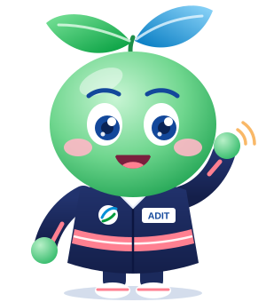

Masukkan sandi admin untuk mengubah isi website.
Setiap kali disimpan, versi sebelumnya disimpan di sini (50 terakhir). Pilih Buka untuk memuat versi itu ke editor, periksa, lalu klik Simpan perubahan.